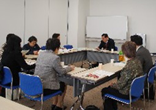

【日 時】
3月18日（火）13:00～15:00
【場 所】
浦和コミュニティセンター第2集会室
【参加者】
9人（埼玉消団連、県婦連、コーペル、母親連絡会、ドゥコープ、生協ネットワーク協議）
■
議 題
（○は主な意見・質問）
1．
食の安全オンブズ会議要綱の変更（案）について提案し確認されました。

変更点：
（1）
埼玉県食の安全・安心の確保に関する基本方針（昨年度の名称変更による）
（2）
委員構成の欄で、食と農に関する・・・（文言追加）
2．
2007年度の活動のまとめについて
取り組みのまとめ、オンブズ会議活動のまとめ、関連会議、その他出席会議等のまとめを提案し確認されました。
3．
2008年度活動の方針と年間日程について提案し、ご意見をいただきました。
（1）
埼玉県の農業政策や農業の問題点について学習を行いたいという要望から、6月の学習懇談会は県の農産物安全課、流通販売課などにお願いすることが確認されました。
○
さいたま市の食の安全に関するアンケート結果から、不安に感じる順位として（1）細菌・ウイルス（2）残留農薬（3）汚染物質（4）水銀（5）BSE（6）食品添加物（7）動物用医薬品（8）GMO（遺伝子組み換え）の順であるので、順位を考慮して学習を進めても良いのではないか。
○
今、中国から飛来する黄砂が汚染されていると問題になっていますが、環境の中での食品の安全性の確保といった視点での学習等も行いたい。
○
可能であれば、県や農水省、さいたま市の検査センターの見学を行いたい。
（2）
オンブズ会議の年間日程が確認されました。
（3）
2008年度、埼玉県食品安全局との第1回消費者懇談会の日程が確認されました。
埼玉県消費者団体連絡会トップ